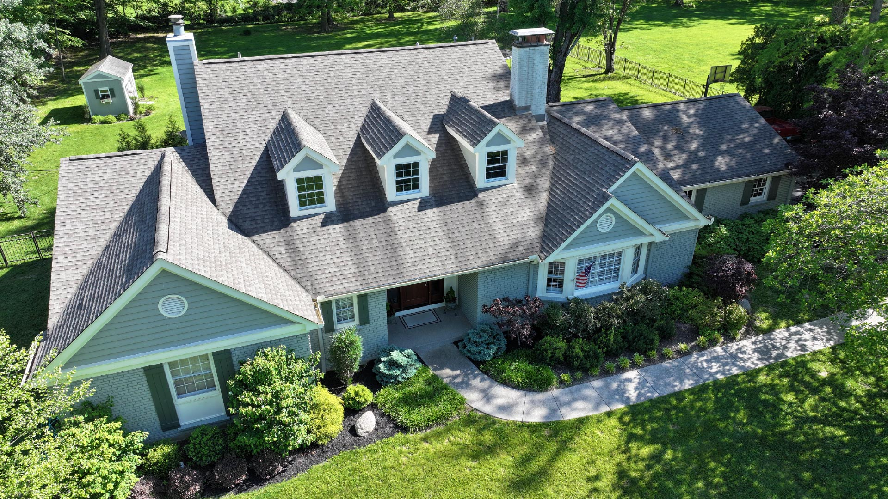
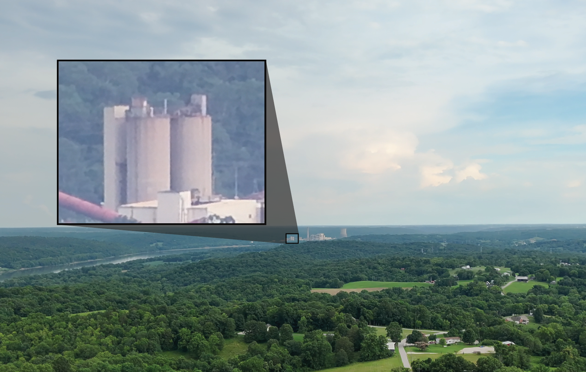
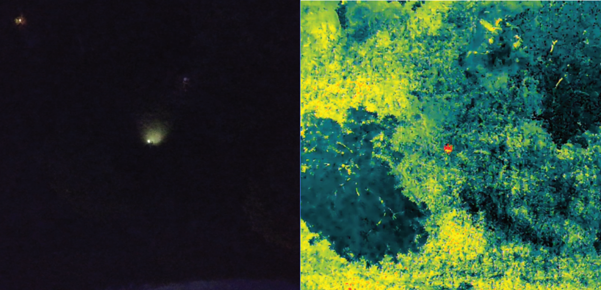

Safety is at the core of every operation. IHDS's pilots are FAA licensed remote pilots under Part 107. Every drone we fly is FAA registered, regularly inspected, checked preflight, and all missions are insured.
With photos up to 100 megapixels and 5.1k 60fps video recording, we can capture fast action and vivid scenes with ease. Perfect for sports, real estate, live events, and real estate.

Capture every detail from a distance with our drones 112x zoom. Ideal for inspections, surveillance, and cinematic shots, no need to fly close, clear, precise, and professional every time.

Night or day we see what the eye can't. With drones that can detect heat signatures clearly regardless of lighting. Ideal for search and rescue, inspections, and crowd monitoring. Reliable, sharp, and mission-ready.


Fill out the contact form at the bottom of this page, or in the contact section of the website. We will get back to you in 24 hours or less.
We will schedule a call, Zoom, or meet-up to discuss the details of the job. You tell us what you need, and we'll outline how we can make it happen.
An FAA licensed drone operator will come to the location with any needed airspace authorizations and the right drone for the job. All flights adhere to federal and state regulations.

We will physically or digitally send you the content within the agreed timeframe. Cost of the fixed/flat services, and also available to make your media pop.
Reach out for a free quote, bookings, or questions
GO TO CONTACT PAGEIt is legally required for a commercial drone operator to have a Part 107 license. Hiring an FAA-licensed Part 107 drone operator ensures legal, safe, and professional aerial operations. They understand flight regulations, can obtain proper airspace access, and minimize liability.
Drone photography gives a bird’s-eye view, showing wide areas that normal cameras can’t. It’s great for real estate, outdoor events like camps or festivals, and sports games by capturing all the action from above. Drones also help with roof inspections, farming, and construction by reaching tough spots quickly and safely.
Yes, when strictly following FAA guidelines and regulations to ensure safe flights. This includes adhering to altitude limits, maintaining visual line of sight, and respecting no-fly zones. We use drones certified in appropriate categories and implement safety protocols to minimize risks. Our priority is protecting people, property, and privacy during every operation.